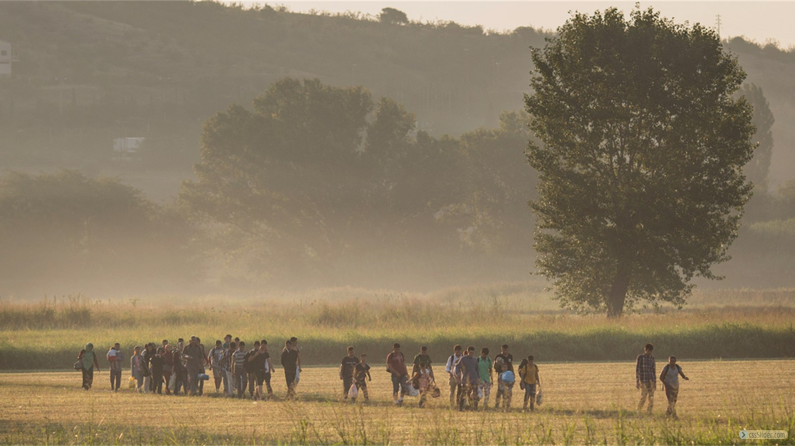

THE
REFUGEE
CRISIS
LEARN MORE
- 
-

-

-

Learn More
Syria’s civil war is the worst humanitarian crisis of our time. Half the country’s pre-war population — more than 11 million people — have been killed or forced to flee their homes.
Families are struggling to survive inside Syria, or make a new home in neighboring countries. Others are risking their lives on the way to Europe, hoping to find acceptance and opportunity. And the onset of harsh winter weather makes life as a refugee even more difficult. At times, the effects of the conflict can seem overwhelming.
But one fact is simple: millions of Syrians need our help. According to the U.N., it will take $7.7 billion to meet the urgent needs of the most vulnerable Syrians in 2016.
You can help. The more you know about the crisis, the more we can do together to help those in need. The lifesaving work that we can do, helping people survive conflict and build brighter futures, is only possible with your knowledge and support.
Frequently Asked Questions
-
What is the refugee crisis?
At its most basic level, the refugee crisis is driven by a single fact: There are 19 million people in the world who are currently refugees - a disastrously high number - and they all need to find somewhere they can live in safety. When we talk about the global refugee crisis, we're not just talking about numbers. The first step of the refugee crisis is the persecution that forces refugees to flee their homes in the first place. The second step is what happens to those refugees once they are forced out of their homes: Often, though not always, they end up in camps. These camps are a global failure: The UN is far short of the $8.4 billion it says it needs to provide bare minimum services just for Syrian refugees. The third step is what happens when refugee families, perhaps after seeing that the camps offer them little hope or protection, seek out safety from persecution further afield, often in developed countries, particularly in Europe. The fourth step is the one that many Western countries are experiencing now: what happens when large numbers of refugees show up.
-
Why are there so many refugees right now?
One thing that jump-started the crisis, and that has helped to make it so especially bad is the Arab Spring. It began in 2011 as a series of peaceful, pro-democracy movements across the Middle East, but it led to terrible wars in Libya and Syria. Those wars are now helping to fuel the refugee crisis. Libya's role in the refugee crisis is different: The war there is terrible, but it has not displaced nearly as many people. What it has done is open up a long-closed route from Africa to Europe. For years, the EU kept refugees out of sight and out of mind by paying Libyan dictator Moammar Gadhafi's government to intercept and turn back migrants that were heading for Europe. Gadhafi was something like Europe's bouncer, helping to bar refugees and other migrants from across Africa. His methods were terrible: Libya imprisoned migrants in camps where rape and torture were widespread. But Europe was happy to have someone else worrying about the problem. When Libya's uprising and Western airstrikes ousted Gadhafi in 2011, Libya collapsed into chaos. As a result, the number of people making the perilous journey to Europe climbed considerably. There is another reason that this crisis is so severe: Politics within Europe are unusually hostile to refugees and migrants at the moment. That isn't causing the numbers of refugees to actually increase, of course, but it's part of why the refugees are in crisis, stuck in camps or dying in the Mediterranean rather than resettling safely in Europe. There are a few reasons anti-refugee and anti-migrant politics are rising in Europe, but it's making it harder for Europe to deal with the crisis, and many refugee families are suffering as a result.
-
Why is there a war in Syria, and why is it so terrible?
Syria is a relatively new country: Its borders were constructed by European powers in the 1920s, mashing together several ethnic and religious groups. Since late 1970, a family from one of those smaller groups - the Assads, who are Shia Alawites - has ruled the country in a brutal dictatorship. In 2011, the Arab Spring rose throughout the Middle East, which sparked rebellion in Syria Though the protests weren't about sectarian issues, many of the protesters were from the country's largest demographic group, the long-disadvantaged Sunni Arabs. Assad's troops shot demonstrators en masse, abducted and tortured activists, and even murdered children. Government forces indiscriminately bombed and shelled civilian populations; Assad aimed to crush the rebels and their supporters by brute force. Assad deliberately targeted Syria's Sunni Muslim majority, civilian and rebel alike. Iran's Shia government also backed Assad with cash, weapons, and soldiers. By 2013, hard-line Sunni Islamists had become some of the most effective anti-Assad fighters, backed by Sunni states like Saudi Arabia and Qatar. They grew strong fighting against Assad in Syria, and later swept northern Iraq under the new name ISIS. By 2014, Syria was divided between numerous different sides in an unmoving stalemate.
-
Why is the journey so dangerous?
There are two culprits: the exploitative criminal networks that move the refugees for high fees but offer them little safety, and the Western governments that have tolerated these dangers, at times as part of a deliberate effort to discourage refugees from attempting the journey. Last fall the UK cut funding for the Mare Nostrum search-and-rescue operations that saved an estimated 150,000 people in one year, saying the rescues encouraged more people to make the crossing. The Italian government ended another life-saving search-and-rescue operation in November. The result, predictably, has been deadly: An estimated 2,500 people have already died so far this summer. It is the result of European policy meant to keep out refugees. In North America, the US has stepped up enforcement efforts after last year's child migrant crisis, including sending aid to Central American countries in exchange for efforts to keep children from making the journey to the United States. As with Europe and other countries, the whole idea is to keep refugees from showing up in the first place - even though these efforts never solve, and often don't even address, the underlying crises that cause the refugees to flee in the first place.
-
Why are Western countries making it so difficult for refugees to come?
Some of this is about issues that are particular to the US and to Europe and Australia, but there is also a generalized anti-immigration sentiment playing out across the developed countries where refugees are arriving. Europe, like a lot of places, has pretty robust anti-immigration politics. The British tabloid press, for example, has for years scaremongered about the supposed threats from refugees and migrants. Taking in large numbers of refugees requires accepting that those refugees might bring changes to your nation's identity or culture. You can see this play out in Europe, for example, in the regular political backlashes against new mosques being constructed. Anti-immigration sentiment tends to rise when people feel economically insecure, as many do in Western countries now. There is thus enormous political demand within Western countries for keeping out migrants and refugees.
-
Why is Europe so unwelcoming to the refugees?
Refugees are showing up just as the European Union is in the middle of a pretty fraught debate over migration, which is part of the EU's growing political tension over the feasibility of the Union itself. If you're a politician in, say, France, then you can't call for kicking out the Poles - that would violate EU rules - but you can call for keeping out Nigerian refugees. European countries are also taking advantage of EU rules to keep refugees out. In theory, the EU's open internal borders mean that it ought to handle refugees collectively. At the same time, countries such as Hungary and Austria are tightening their borders with other European countries to keep refugees from crossing their territory, even en route to other countries like Germany. In Hungary's case, this is apparently intended to discourage refugees from entering the EU at all - Hungarian Prime Minister Victor Orban is openly hostile to refugees, who he believes are a threat to Europe's "Christian character." While Germany has dramatically relaxed its asylum rules, which is a very important step for dealing with the crisis and helping refugees, the rest of Europe has not really followed, and is tightening restrictions rather than loosening them. Until the EU can take on the refugee crisis collectively, as it's supposed to, the problem will remain unsolved.
-
Why isn't America taking more Syrian refugees?
The US is usually pretty good about resettling refugees - it resettles about 70,000 a year - but has so far badly lagged in resettling Syrians. Since 2011, the UN refugee agency has referred 17,000 Syrians to the US for resettlement, but the US has only resettled about 9 percent of those. The US can get away with imposing a long, painstaking bureaucratic process because it is voluntarily resettling Syrian refugees who are an ocean away. America's bureaucratic resettlement process, like its low acceptance rate for Syrian refugees, comes down in many ways to a fear of terrorism. "The Obama administration has provided virtually no assurances that the admission of Syrian refugees will not pose a national security threat to the United States," Rep. Michael McCaul, who chairs the Homeland Security Committee, told the New Republic. If the US were to admit, say, 65,000 Syrian refugees, as some humanitarian organizations have called for it to do, and just one of them were to be involved in some sort of attack, then it seems likely the Obama administration would face a severe political backlash. So while many Americans today say they want the US to resettle Syrian refugees, they have also sent a very clear message that they fear terrorism above almost all else.
-
What's the difference between refugees and migrants?s
Not everyone who is crossing the Mediterranean or otherwise showing up at a European or American border is a refugee; many are migrants coming for other reasons. The word "Migrant" can mean someone who moves to a foreign country voluntarily, or it can be used as a broader umbrella term that includes refugees as well as voluntary migrants. A Syrian man fleeing war is a refugee, whereas a Cameroonian man seeking economic opportunity is a migrant. Whether someone is considered a refugee or a migrant effects what sorts of legal rights they have: Refugees can apply for asylum and are protected by international and domestic law, for example, while economic migrants cannot. Calling a group of people "Refugees" can be a way of describing them as legitimately deserving of shelter and care, whereas calling them "Migrants" can be a way of accusing them of arriving for economic reasons, and perhaps even lying about their asylum claims. For all its legal salience, is actually quite blurry - and it can also imply, wrongly, that non-refugee migrants should be rejected, that only refugees deserve their rights. Of which there are a great many, the distinction between migrants and refugees - and the implied value of judgment of who does and does not "Deserve" to seek a better life abroad - falls apart.